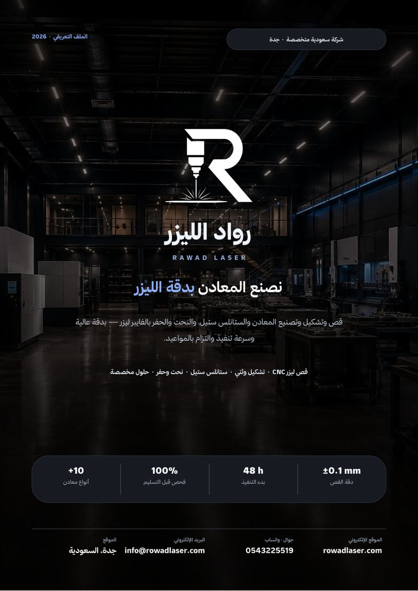

رواد الليزر شركة سعودية مقرها مدينة جدة، متخصصة في حلول قص وتشكيل وتصنيع المعادن والستانلس ستيل باستخدام أحدث تقنيات الليزر، إلى جانب خدمات الحفر والنقش على المعادن بدقة عالية. في هذا المقال نعرّفك بنا بالتفصيل: من نحن، ماذا نقدّم، كيف نعمل، ولماذا يختارنا المقاول وصاحب المصنع وصاحب المحل والفرد صاحب الطلب الخاص — وفي نهاية المقال تجد ملفنا التعريفي كاملاً بصيغة PDF جاهزاً للتحميل والمشاركة.
من نحن
نجمع بين الخبرة والتقنيات الحديثة لنقدّم منتجات معدنية تلبي أعلى معايير الجودة، مع التزام كامل بالدقة وسرعة الإنجاز. البداية من فكرتك، أو رسمتك الهندسية، أو حتى تصوّرك الأولي، ثم نحوّله إلى قطعة معدنية متقنة تُصنع بعناية وتُراجع في كل مرحلة من مراحل الإنتاج. نهتم بأدق التفاصيل، ونؤمن أن جودة العمل لا تُقاس بالنتيجة النهائية فقط، بل بالطريقة التي نصل بها إليها.
ولأن احتياجات عملائنا تختلف من مشروع لآخر، نقدّم حلولاً مرنة تناسب المشاريع الصناعية والتجارية والطلبات الخاصة، سواء كانت قطعة واحدة أو إنتاجاً بكميات كبيرة. كل مشروع يحظى بالاهتمام نفسه، والالتزام نفسه، والحرص نفسه على أن يصل في الموعد المتفق عليه وبالجودة التي تليق بثقة عملائنا.
في رواد الليزر لا نكتفي بتنفيذ الأعمال المعدنية، بل نسعى إلى بناء شراكات طويلة الأمد تقوم على الثقة والاحترافية والالتزام، لنكون الخيار الأول لكل من يبحث عن الدقة والجودة في عالم تصنيع المعادن.
رسالتنا ورؤيتنا وقيمنا
- رسالتنا: تقديم حلول معدنية دقيقة وسريعة تلبي احتياجات القطاعات الصناعية والتجارية والإنشائية، بالتزام كامل بالجودة والمواعيد، وبناء علاقات طويلة المدى مع عملائنا.
- رؤيتنا: أن نكون الخيار الأول والأكثر ثقة في حلول قص وتشكيل وتصنيع المعادن بالليزر في المملكة، والمرجع الذي يقصده كل من يبحث عن دقة وسرعة وجودة.
- قيمنا: الدقة — تنفيذ مطابق للمخطط بأدق التفاصيل. السرعة — مواعيد واضحة والتزام حقيقي بالتسليم. الثقة — شفافية في السعر ومتابعة شخصية. الجودة — معايير صناعية وفحص قبل كل تسليم.
خدماتنا: حلول معدنية متكاملة تحت سقف واحد
١. قص المعادن بالليزر CNC
قص دقيق وسريع للصفائح المعدنية بحواف نظيفة وتفاصيل معقدة، مطابق للمخطط بدقة تصل إلى ±0.1 مم. القص بالتحكم الرقمي يعني أن القطعة رقم واحد والقطعة رقم مئة متطابقتان تماماً، وهو ما يهم في المشاريع التي تُركّب فيها القطع مع بعضها.
٢. تشكيل وثني المعادن
ثني وطي الصفائح بزوايا مضبوطة لإنتاج قطع وهياكل ثلاثية الأبعاد جاهزة للتركيب — من الحوامل والدعائم البسيطة إلى الصناديق والهياكل المركّبة.
٣. تصنيع الستانلس ستيل
منتجات ومعدات وأثاث وتجهيزات مطاعم ومطابخ، بتشطيب احترافي مقاوم للصدأ والاستخدام الشاق: طاولات عمل، أرفف، أغطية، مغاسل، وهياكل تخدم المطاعم والمقاهي والمنشآت الصحية والصناعية.
٤. النحت والحفر بالفايبر ليزر
حفر الأسماء والشعارات والأرقام التسلسلية وأكواد QR على المعادن — للّوحات واللافتات والهدايا والقطع الصناعية والترقيم الصناعي. النتيجة نقش دائم لا يبهت مع الاستخدام.
٥. القطع الصناعية وقطع الغيار
تصنيع قطع دقيقة حسب الرسومات الهندسية والمقاسات المطلوبة، للمصانع والورش وخطوط الإنتاج — بما في ذلك إعادة تصنيع قطعة توقّف إنتاجها انطلاقاً من العينة أو المخطط.
٦. واجهات وديكورات معدنية
تنفيذ واجهات المحلات واللافتات والزخارف والعناصر المعمارية المعدنية بمظهر احترافي يدوم، سواء بأنماط زخرفية مقصوصة بالليزر أو ألواح مصمتة بتشطيبات مختلفة.

أكثر من ١٠ أنواع معادن بسماكات متعددة — نختار المعدن الأنسب لاستخدام القطعة.
المعادن التي نعمل عليها
نعمل على أكثر من عشرة أنواع من المعادن بسماكات متعددة، ونختار المعدن والسماكة بما يخدم الاستخدام النهائي للقطعة لا بما هو متاح فقط:
- الستانلس ستيل (304 / 316) — للتجهيزات والمطابخ والبيئات الرطبة أو الملحية.
- الحديد والصلب الكربوني — للهياكل والقطع الإنشائية وقطع التحميل.
- الألمنيوم — خفيف ومقاوم للتآكل، مناسب للواجهات والقطع الخفيفة.
- النحاس والبراص — للديكور واللوحات والقطع ذات الطابع المميز.
- الصفائح المجلفنة والمعادن المطلية — للاستخدامات الخارجية وطويلة الأمد.
القطاعات التي نخدمها
- الصناعي: قطع غيار، هياكل، ولوازم خطوط الإنتاج للمصانع والورش.
- التجاري: واجهات، لافتات، ديكورات معدنية، وتجهيزات المحلات والمطاعم.
- الإنشائي: عناصر إنشائية ومعمارية للمقاولين والمشاريع العقارية.
- الأفراد: الطلبات الخاصة والقطعة الواحدة — لوحة، هدية، أو تصميم خاص.
كيف تطلب: من الفكرة إلى التسليم في أربع خطوات
- أرسل طلبك — عبر واتساب أو البريد الإلكتروني أو نموذج «اطلب عرض سعر» في الموقع، وأرفق ما لديك: مخطط، رسم، أو حتى صورة مع القياسات. وإن لم يكن لديك مخطط، نساعدك في تجهيزه.
- عرض سعر سريع — نراجع التفاصيل ونرسل لك سعراً واضحاً وجدول تنفيذ محدداً، بدون أي التزام من جانبك.
- التصنيع والتنفيذ — نبدأ القص والتشكيل والتصنيع عادةً خلال ٦ ساعات من اعتماد الطلب، مع متابعة الجودة خطوة بخطوة.
- الفحص والتسليم — نفحص القياسات والتشطيب قبل التسليم، ونسلّمك المنتج جاهزاً في الموعد المتفق عليه.
ما نحتاجه منك لإصدار عرض السعر
- المخطط أو الرسم — أو صورة واضحة مع القياسات.
- نوع المعدن والسماكة — وإن لم تكن متأكداً نرشدك للأنسب.
- الكمية المطلوبة — من قطعة واحدة إلى كميات المشاريع.
- الموعد المطلوب — لنرتّب جدول التنفيذ على أساسه.
كلما كانت هذه المعلومات أوضح، كان عرض السعر أدق وأسرع — وتجنّبنا معاً جولات المراجعة التي تؤخّر التنفيذ.
لماذا يختارنا عملاؤنا
- السرعة: رد سريع على الاستفسار، عرض سعر سريع، وبدء تنفيذ خلال ٦ ساعات من الاعتماد، مع التزام حقيقي بالموعد.
- المرونة: نقبل الطلبات الصغيرة وغير المعتادة التي ترفضها ورش أخرى — حتى القطعة الواحدة.
- التنوّع: أنواع معادن وخدمات متعددة تحت سقف واحد، فلا تتنقّل بين أكثر من مورّد لطلب واحد.
- الدقة: تنفيذ مطابق للمخطط، حواف نظيفة، وقياسات مضبوطة، مع فحص ١٠٠٪ قبل التسليم.
- الثقة والمتابعة الشخصية: شفافية في السعر، ومتابعة شخصية لكل طلب من أول رسالة حتى التسليم.
حمّل الملف التعريفي كاملاً (PDF)
جهّزنا ملفاً تعريفياً من ست صفحات يعرض الشركة وخدماتها وقدراتها وخطوات الطلب في صيغة جاهزة للمشاركة مع فريقك أو إدارة المشتريات. يمكنك تصفّحه هنا مباشرة أو تحميله:

رواد الليزر — الملف التعريفي 2026
من نحن، الخدمات الست، القطاعات والقدرات، خطوات الطلب، وبيانات التواصل.
ابدأ طلبك الآن
سواء كنت مقاولاً تحتاج دفعة قطع مطابقة للمخطط، أو صاحب مطعم تريد تجهيزات ستانلس ستيل، أو صاحب مصنع تبحث عن قطعة غيار، أو فرداً تريد لوحة أو هدية منقوشة — أرسل لنا التفاصيل عبر واتساب أو من صفحة الخدمات، وستصلك إجابة واضحة بالسعر والمدة. ويمكنك أيضاً الاطلاع على صفحة خدمات القص والتصنيع أو صفحة خدمة الفايبر ماركينق لمعرفة تفاصيل أكثر.
صفحة خدمات قص وتصنيع المعادن · صفحة خدمة الفايبر ماركينق · تواصل معنا
احصل على عرض سعر مجاني خلال وقت قصير.
اطلب عرض سعر